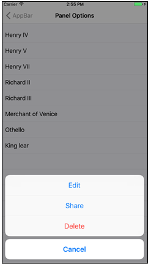
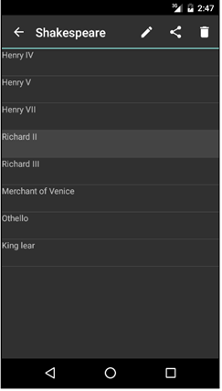
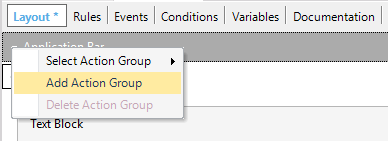
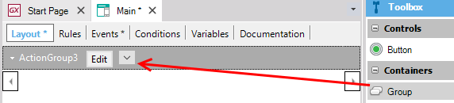

The various elements presented in the user interface of a mobile application are usually driven by actions.
These actions are presented to the end user in many different ways; images, buttons, standard action bars.
 
An Action Group is an element of the user interface which is used to group actions. This group of actions can be shown dynamically on the screen, and its visualization is based on a set of properties.
There are two types of action groups:
- The action group as is. The ones of this type will have the methods and properties described bellow.
- The action group inside an action group. These will work as a submenu and will not have the Control Type property and the methods.
There are two kinds of action groups that can be added to the layout by the developer.
- Isolated Action Group
By default, every layout includes an isolated action group called "Application Bar" which includes the actions that will be shown in the bars at the top or the bottom of the application -depending on the platform and the position configured for the actions it contains. To add a new action group of this kind we must click on the top-left arrow of the layout and select "Add Action Group".

Then you need to call the ActionGroup using the Show method in some event. Every new action is added by dragging a button from the toolbox.
- Nested Action Group
This is an action group inserted inside an isolated action group. In order to add a new nested action group, you need to select the Group control from the toolbox and drop it on the layout's application bar or any other action group.

Then, you can add new actions by dragging buttons from toolbox and drop them inside the Group control.
The action groups have the following properties to allow us to set the appearance and behavior of the control:
| Caption |
This text is shown as a description for the action group. |
| Control Type |
Indicates the type of action group. It can be Bar, Action Sheet or Menu. Read more |
As described before, the action groups can be shown dynamically on the screen. It means that we can show or hide this control in runtime. In order to do this we have the following methods:
This method allows us to show the Control in an event.
Event 'ShowActionGroup'
ActionGroup.Show()
EndEvent
This method allows us to hide the Control in an event.
Event 'HideActionGroup'
ActionGroup.Hide()
EndEvent
The set of available methods for each action group depends on the selected Control Type.
Action Groups of type Sheet or Menu are Modals and are automatically hidden when selecting any option, so the Hide method is not required. The Hide method is only for the Action Groups of type Bar.
Action Groups of type Menu are contextual to the control that triggered them.
The position of the elements of a group varies with the Control Type associated with the group:
- Menu and Action Sheet
The position of the elements is based on the order they have in the designer. The element on the left will be on top and the element on the right at the bottom.
- Bar
The elements are positioned based on their priority. On iOS, we can choose between this and custom positioning for each element.
For more information, please refer to Control Type property (Action Group for Smart Devices)
Application Bars in Native Mobile Applications
BadgeText property
|